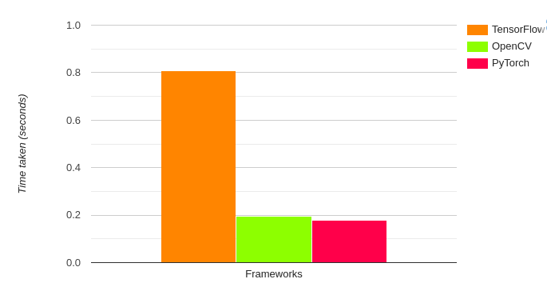
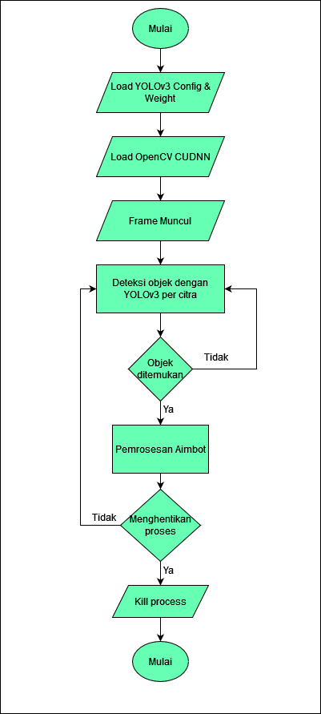

CSGO Aimbot YOLOv3
Aimbot yang memungkinkan player menembak musuh secara otomatis.
Pada projek ini saya membuat Aimbot yaitu player memungkinkan untuk menembak musuh secara otomatis, tepat dan akurat pada game CSGO. Deteksi menggunakan YOLOv3 Darknet yang ringan sehingga dapat digunakan dengan ringan saat game sedang dimainkan yang dimana sama-sama membutuhkan GPU. Pada deteksi mendapatkan kisaran 31 FPS sehingga tidak terlalu delay dengan game.
Algoritma Objek Deteksi
Algoritma Objek Deteksi merupakan salah satu algoritma computer vision yang berfungsi untuk menentukan di mana lokasi objek pada suatu citra berada dengan bounding box, sekaligus mengklasifikasikan objek tersebut ke dalam sebuah kelas yang telah ditentukan. Metric yang paling cocok dan sering digunakan untuk mengukur kemampuan algoritma deteksi objek adalah Mean Average-Precission (mAP). Terdapat berbagai macam jenis arsitektur object detection algorithm, seiring waktu, CNN telah menjadi arsitektur dasar yang paling sering digunakan karena keunggulanannya dalam melakukan deteksi objek pada suatu citra
You Only Look Once (YOLO)
YOLO merupakan salah satu state-of-the-art object detection algorithm yang membagi citra masukan ke dalam suatu grid berukuran SxS. Ukuran dari grid cell tersebut tergantung pada input size yang digunakan pada suatu arsitektur. Pada YOLOv3, jika input size 416x416, maka ukuran grid size adalah 13x13, 26x26, dan 52x52. Setiap sel bertugas untuk memprediksi objek yang ada di dalam sel tersebut dengan bounding box beserta confidence yang merupakan nilai probabilitas keberadaan suatu objek pada bounding box tersebut. Kemudian, setelah bounding box dipetakan berdasarkan nilai confidence yang dihasilkan, YOLO akan memprediksi kelas dari objek yang terdapat pada bounding box tersebut beserta probabilitasnya, sehingga terbentuklah class probability map. Dari sekian banyak bounding box yang dihasilkan, untuk mendapatkan bounding box beserta kelas objek dengan probabilitas yang tinggi, maka dari seluruh hasil prediksi tersebut, hanya yang melampaui threshold saja yang akan digunakan. Jika terdapat duplikasi bounding box, maka Non-max Suppresion (NMS) berperan untuk menghilangkan duplikat tersebut. Gambar 1 merupakan ilustrasi dari cara kerja YOLO.
 Pada YOLOv3, feature extractor yang sebelumnya menggunakan Darknet-19 menjadi
Darknet-53, dan juga proses deteksi objek yang kini menggunakan 3 skala di mana pada
setiap skala menggunakan 3 anchor boxes sehingga berdampak pada meningkatnya
kemampuan mendeteksi objek yang lebih kecil.
Pada YOLOv3, feature extractor yang sebelumnya menggunakan Darknet-19 menjadi
Darknet-53, dan juga proses deteksi objek yang kini menggunakan 3 skala di mana pada
setiap skala menggunakan 3 anchor boxes sehingga berdampak pada meningkatnya
kemampuan mendeteksi objek yang lebih kecil.
OpenCV DNN dengan CUDA
OpenCV DNN Module hanya mendukung inferensi Deep Learning pada gambar dan vidio saja, tidak mendukung Tuning dan Train Data. OpenCV DNN sangat dioptimalkan untuk prosessor Intel. Kita bisa mendapatkan Frame Per Second (FPS) yang baik saat menjalankan inferensi pada vidio Real-Time untuk deteksi objek dan aplikasi segmentasi gambar. Kita sering mendapatkan FPS yang lebih tinggi dengan modul DNN saat menggunakan model yang telah dilatih sebelumnya menggunakan Framwork tertentu. Sebagai contoh, mari kita lihat kecepatan inferensi klasifikasi gambar untuk Framwork yang berbeda.Gambar 2 merupakan perbandingan waktu yang diambil pada klasifikasi gambar dengan Framwork yang berbeda.

Desain Model Sistem
Pada projek ini, proses pelatihan hingga pengujian model akan berjalan pada Ananconda virtual environment dengan menggunakan bahasa pemrograman Python versi 3.8 dan OpenCV versi 4.5.5 di dalamnya, serta terinstall CUDA pada OpenCV. Program yang kami buat menggunakan bahasa pemrograman Python agar mempermudah dalam pengeksekusiannya. Skema proses pengujian model dapat dilihat pada gambar dibawah.

Implementasi Program
 Gambar diatas merupakan tampilan aplikasi saat object detector dijalankan. Terdapat
2 window yang terdapat pada layar desktop, yang pertama merupakan window command
prompt di mana OpenCV berjalan, menampilkan objek yang terdeteksi oleh model yang
ditandai dengan koordinat bounding box, dan input size dari video berupa citra frame
sebesar 416x416x3. Kemudian pada window yang kedua, merupakan preview dari video
yang sedang dideteksi oleh object detector, dimana jika object detector menangkap
objek yang terindikasi maka akan muncul output loop “Terdeteksi:1”. Misal objek yang
terdeteksi terdapat lebih dari satu maka angka akan berubah mengikuti berapa objek
yang teridentifikasi.Jika ada objek yang terdeteksi maka mouse akan otomatis bergeak
lalu menembak musuh secara otomatis.
Gambar diatas merupakan tampilan aplikasi saat object detector dijalankan. Terdapat
2 window yang terdapat pada layar desktop, yang pertama merupakan window command
prompt di mana OpenCV berjalan, menampilkan objek yang terdeteksi oleh model yang
ditandai dengan koordinat bounding box, dan input size dari video berupa citra frame
sebesar 416x416x3. Kemudian pada window yang kedua, merupakan preview dari video
yang sedang dideteksi oleh object detector, dimana jika object detector menangkap
objek yang terindikasi maka akan muncul output loop “Terdeteksi:1”. Misal objek yang
terdeteksi terdapat lebih dari satu maka angka akan berubah mengikuti berapa objek
yang teridentifikasi.Jika ada objek yang terdeteksi maka mouse akan otomatis bergeak
lalu menembak musuh secara otomatis.